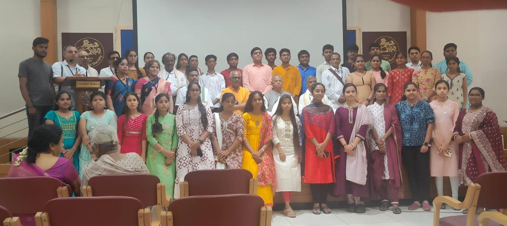
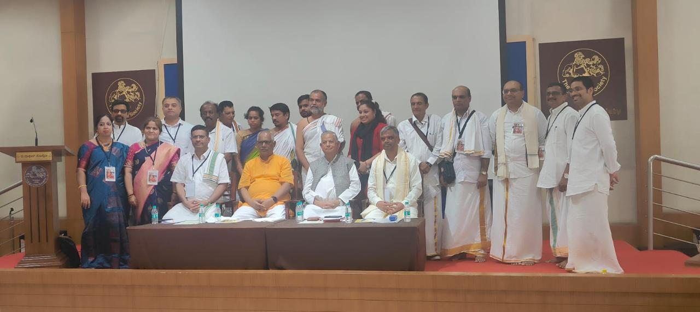

Welcome to Gallery
This page gives a collection of moments spent by Sangha on different events.
📸 Pratibha Puraskara 2023–2024 Photos
 
📸 Pratibha Puraskara 2024–2025 Photos
PrathibhaPuraskara-2024-25